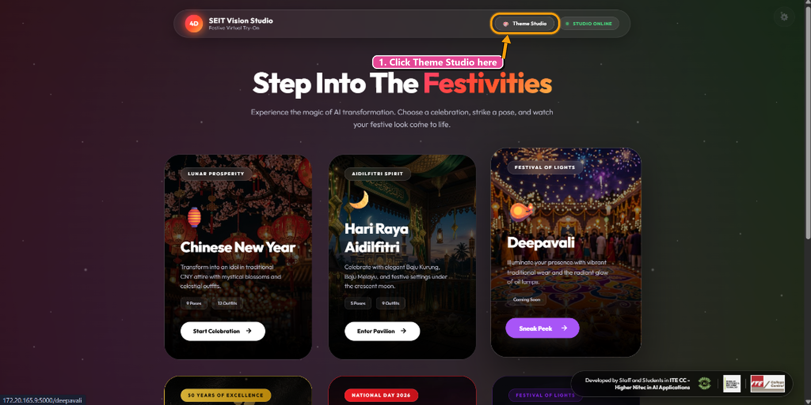
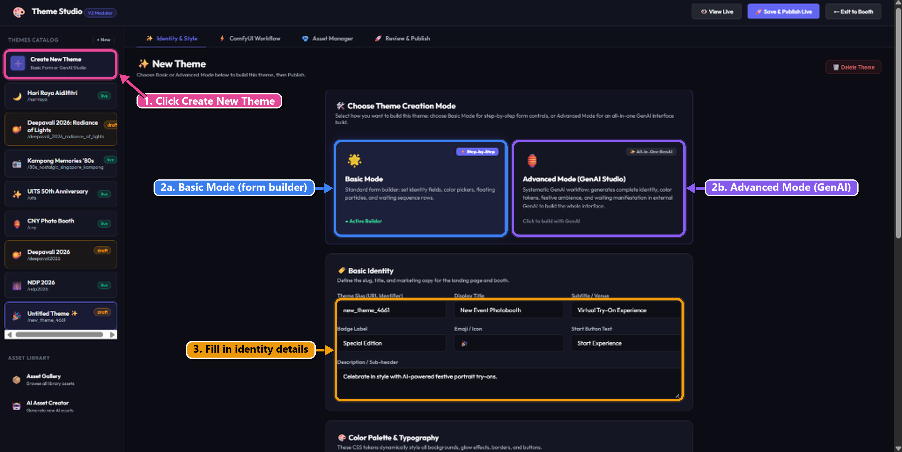
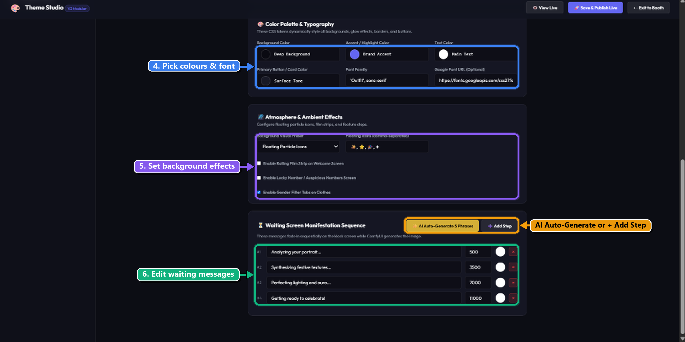
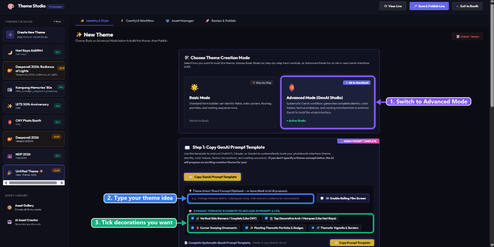
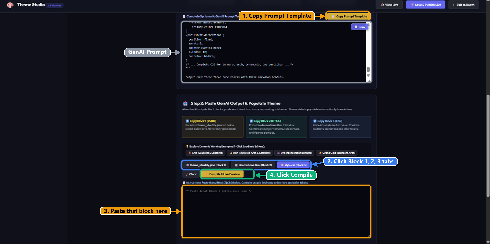
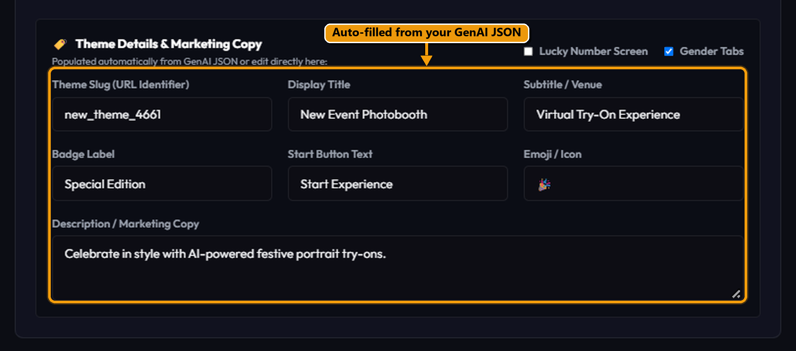

How to Build a New Theme from Scratch
Learn how to launch a brand new photobooth theme inside SEIT Vision Studio. We start right from the main landing page, enter Theme Studio, click "Create New Theme", explore both Basic Mode (Form Builder) and Advanced Mode (GenAI 3-Block Studio), compile your changes, test with "View Live", and deploy with "Save & Publish Live"!
Basic Mode (Form Builder)
Manual control over every setting: configure identity titles, color pickers, Google Fonts, floating particle effects, and waiting screen phrases row by row.
Advanced Mode (GenAI Studio)
One-prompt AI generation: copy the provided prompt template into ChatGPT/Claude/Gemini, then paste the 3 returned code blocks (JSON, HTML, CSS) to build a rich theme automatically.
Enter Theme Studio from the Landing Page
Launch into the theme management workspace
When you first open SEIT Vision Studio, you will see the primary navigation header across the top. Click on Theme Studio in the top-right navigation bar to view your existing themes and access the theme creator.

Figure 1.1: Click the "Theme Studio" button in the upper navigation bar.
Click "Create New Theme" & Choose Your Mode
Start an untitled draft and pick between Basic Form Builder and Advanced GenAI Studio
Inside Theme Studio, look at the left sidebar under THEMES CATALOG:
- Click the large + Create New Theme card (or the + New button) at the top of the sidebar.
- A fresh draft theme named "Untitled Theme" will appear in your catalog.
- In the main workspace, locate the Choose Theme Creation Mode card selector:
- Basic Mode: Step-by-step form controls for identity fields, color pickers, floating particles, and waiting sequence rows.
- Advanced Mode (GenAI Studio): Systematic GenAI workflow that builds the full theme via 3 code blocks (JSON, HTML, CSS).

Figure 2.1: Click "Create New Theme" in the left catalog, then choose Basic Mode or Advanced Mode.
Basic Mode: Form Builder Walkthrough
Configure Identity, Color Tokens, Ambient Effects, and Waiting Phrases manually
If you select Basic Mode, you have full manual control through structured form sections:
Set the Theme Slug (unique URL identifier, e.g. new_theme_4661), Display Title, Subtitle / Venue, Badge Label (e.g. "Special Edition"), Emoji/Icon, Start Button Text, and the Description / Sub-header marketing copy.
Customize CSS color tokens for Deep Background, Brand Accent, Main Text, and Primary Button Tone. Specify the Font Family (e.g. 'Outfit', sans-serif) and an optional Google Font URL stylesheet.
Choose background presets like Floating Particle Icons and specify comma-separated floating emojis (e.g. ✨, ⭐, 🎉, ✦). Toggle the Rolling Film Strip, Lucky Number Screen, and Gender Filter Tabs.
Configure the sequential phrases that fade in while ComfyUI synthesizes portrait images. Adjust millisecond timings (e.g. 500ms, 3500ms, 7000ms), or click ✨ AI Auto-Generate 5 Phrases to automatically craft festive copy!

Figure 3.1: Color pickers, particle effect icons, feature toggles, and waiting screen phrases in Basic Mode.
Advanced Mode: Configure Theme Concept & Elements
Set your celebration theme concept and select dynamic decorations
Switch to Advanced Mode (GenAI Studio) by clicking its card. The platform provides a dynamic prompt engine:
- Switch to Advanced Mode: Click the Advanced Mode (GenAI Studio) card.
- Theme Intent / Event Concept: Type your theme idea into the box (e.g. "Deepavali Festival of Lights", "Vintage Parisian Bistro", or "Cyberpunk Neon Gala").
- Dynamic Thematic Elements: Check or uncheck the festive decorations you want included in your prompt (Vertical Side Banners, Top Decorative Arch, Corner Ornaments, Floating Particles, Vignette/Borders).

Figure 4.1: Switch to Advanced Mode, enter your theme concept, and select desired thematic decorative elements.
Paste the 3 Blocks into GenAI Studio & Compile
Copy each response block from ChatGPT into its corresponding tab, then click Compile
In Step 5, you copy the full prompt template, send it to your GenAI model of choice (ChatGPT, Claude, or Gemini), and paste the 3 structured code blocks back into the platform:
- Copy Prompt Template: Click the yellow "Copy Prompt Template" button above the prompt viewer.
- Run in ChatGPT / LLM: Paste the template into ChatGPT or Gemini and submit.
- Switch between Block Tabs: In SEIT Vision Studio under Step 2: Paste GenAI Output & Populate Theme, click each block tab and paste the corresponding code:
Block 1: theme_identity.json
Click the theme_identity.json (Block 1) tab. Paste the JSON response here. All marketing fields and color tokens auto-fill instantly!
Block 2: decorations.html
Click the decorations.html (Block 2) tab. Paste the HTML decoration elements (corner arches, couplets, floating badges).
Block 3: style.css
Click the style.css (Block 3) tab. Paste the scoped CSS styling and keyframe animations.
Applying Changes:
Once all 3 blocks are pasted, click the bright yellow/gold ✨ Compile & Live Preview button directly above the code editor. The engine immediately compiles the styling, applies festive decorations, and auto-populates all theme details!

Figure 5.1: Copy prompt template, paste each GenAI block into its tab, and click "Compile & Live Preview".
Review Details, Test "View Live" & Publish
Inspect the auto-populated marketing copy, test the live preview, and deploy to your photobooth
✨ 1. Auto-Populated Theme Details & Marketing Copy
Scroll down to the Theme Details & Marketing Copy panel. Notice how your Display Title, Subtitle / Venue, Badge Label, Emoji/Icon, Start Button Text, and Description have been filled in automatically from your Block 1 JSON. You can fine-tune any field directly if you wish!

Figure 6.1: Theme Details & Marketing Copy populated automatically from your GenAI JSON block.
🚀 2. Top Navigation Actions: View Live & Publish
Click View Live in the top header bar. A new preview session will open showing your brand-new theme interface, animations, buttons, and custom layout. Check that all styling, fonts, and banners render cleanly.
If everything checks out and looks spectacular, click the pink/purple Save & Publish Live button in the top navigation header. Your theme is now officially active and ready on your live booth!